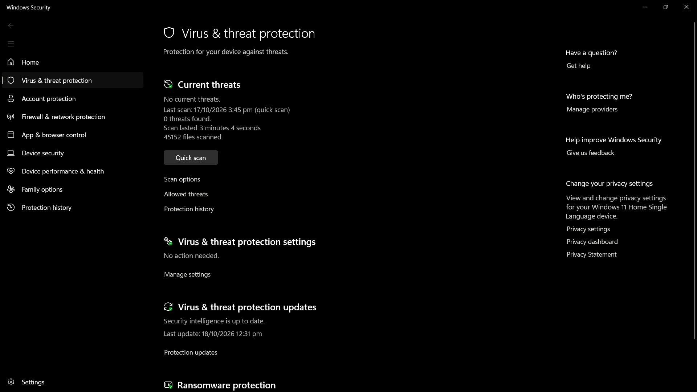

PC Is Slow
3 Check for malware.
Open Windows Security and run a scan. Keep your security software updated.

Use Windows Security or another trusted security app. Avoid unknown downloads
promising instant speed boosts.
What to check:
- Open Windows Security.
- Run a scan and keep protection up to date.
- Avoid unknown cleaner apps.